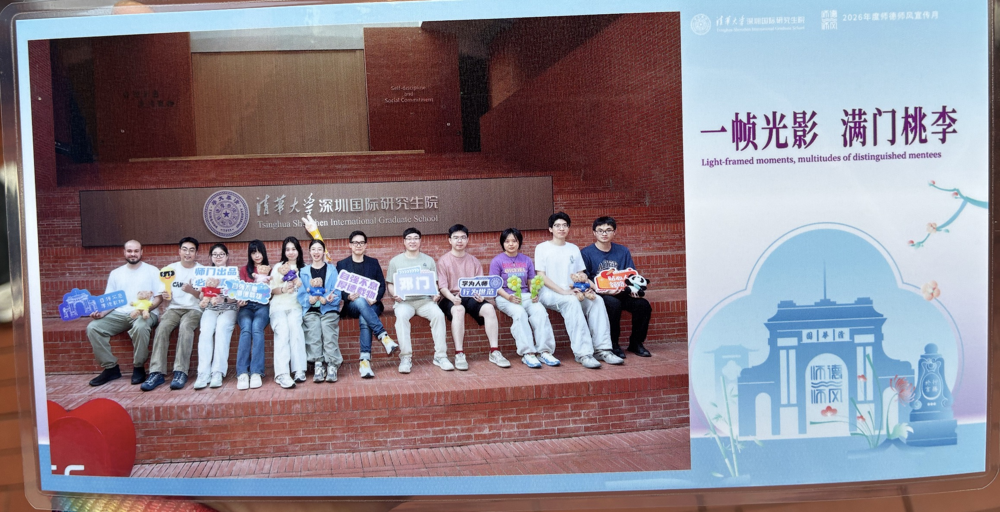
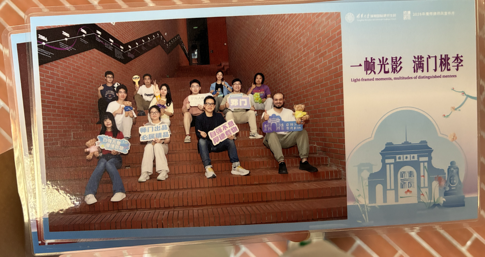

Celebrating Teacher’s Day with Friends and Colleagues
Teacher’s Day 2026
On the occasion of Teacher’s Day, I was delighted to share this joyful celebration with my friends and colleagues at Tsinghua Shenzhen International Graduate School.
It was a wonderful opportunity to reflect on the meaning of teaching, mentorship, friendship, and the shared pursuit of knowledge. I am sincerely grateful for the kindness, encouragement, and memorable moments we have shared together.
Wishing all teachers and friends continued happiness, good health, success, and fulfilment in the year ahead. May we continue to inspire one another and create many more wonderful memories together.

